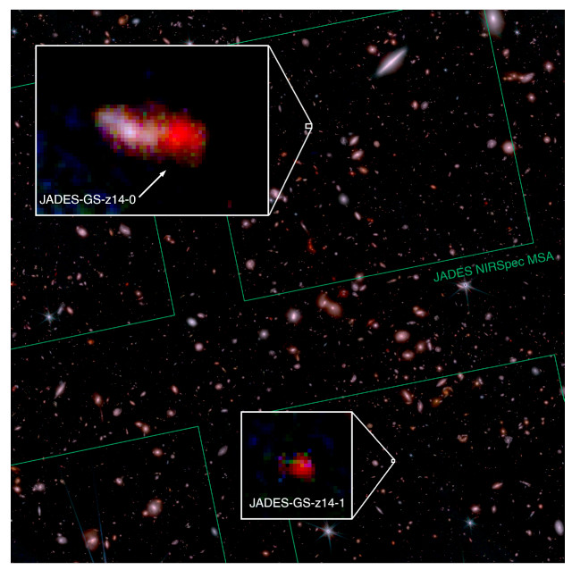
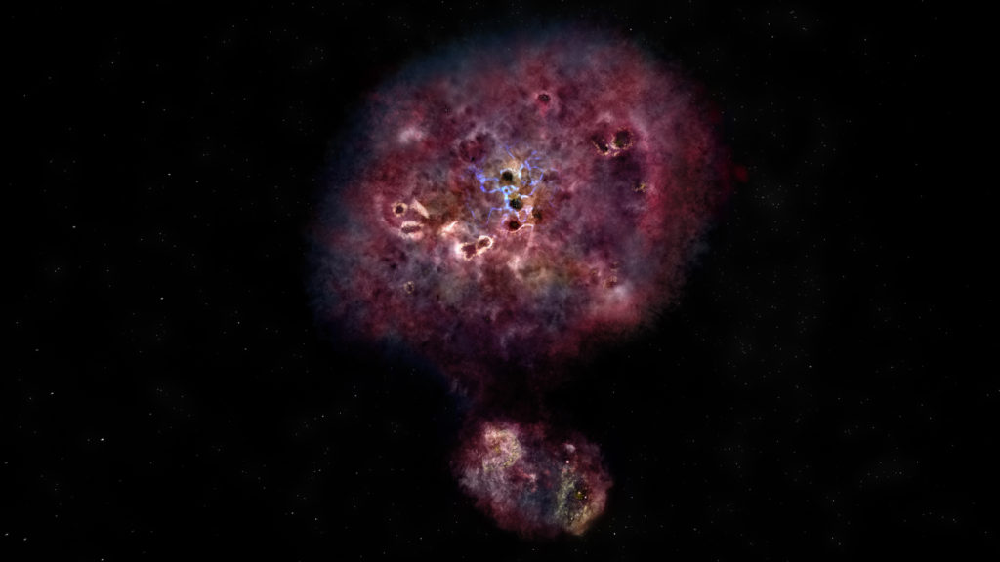
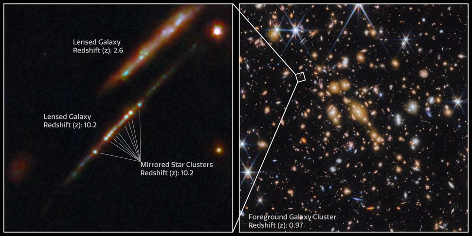
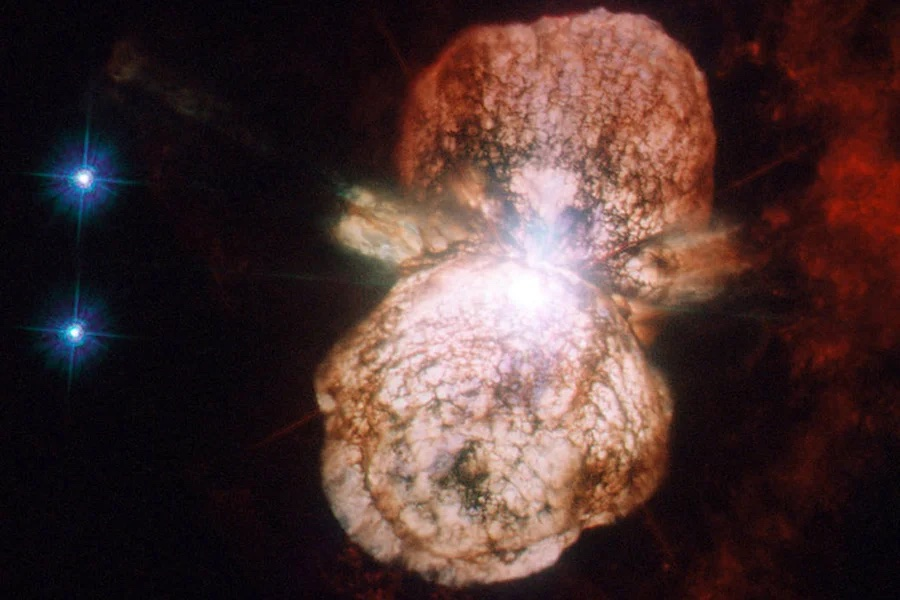

- Research -

Distant Universe
When did the first stars and galaxies emerge in the Universe? How do they look like? We cannot stop our
Super Massive Blackholes
Brief description of research topic 2...

Gas, Stars, and Dust
Brief description of research topic 3...

Hidden Monsters in the Universe
Brief description of research topic 4...

Gravitational Lensing
Brief description of research topic 5...

Death of stars
Brief description of research topic 6...